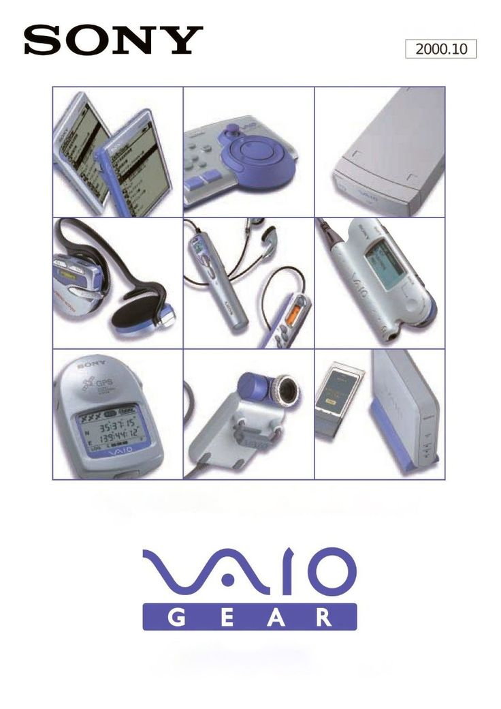
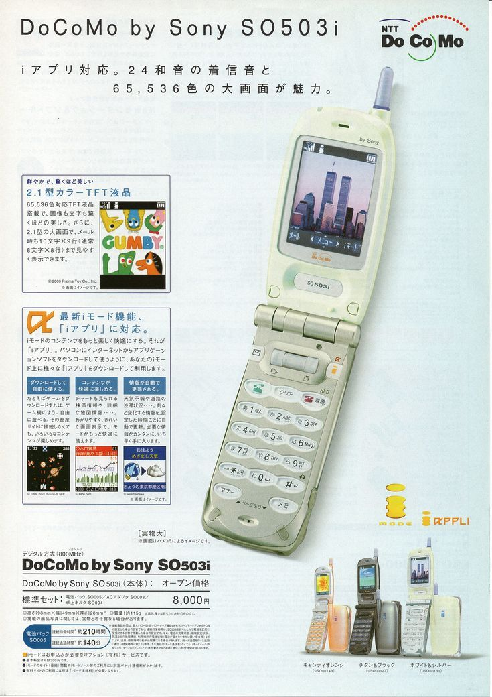

A Sony Corporation, fundada no Japão em 1946, sempre foi uma das marcas mais icônicas e reconhecidas no mundo da tecnologia e dos eletrônicos de consumo. Desde os seus primeiros produtos até as inovações mais recentes, a Sony conquistou um lugar especial no coração dos consumidores, criando aparelhos que marcaram gerações inteiras.
Nos anos 1970 e 1980, a Sony já se destacava com equipamentos de áudio de altíssima qualidade. O Walkman, lançado em 1979, revolucionou o modo como as pessoas ouviam música, permitindo que qualquer um carregasse suas canções favoritas no bolso. Esse produto não só tornou a marca sinônimo de inovação, mas também moldou a cultura jovem de toda uma época.
Já nos anos 1990, a Sony ampliou ainda mais o seu portfólio de eletrônicos. Aparelhos de som domésticos, como os Mini Systems, eram presença garantida em festas e reuniões familiares, oferecendo potência e clareza sonora que conquistaram os amantes de música. Ao mesmo tempo, a empresa investia pesado no mercado de televisores, trazendo os lendários Trinitron, conhecidos por sua qualidade de imagem superior e durabilidade impressionante.
Na virada para os anos 2000, a Sony consolidou sua presença como líder em inovação tecnológica. Televisores de tela plana, câmeras digitais Cyber-shot, e os famosos Discman para CDs estavam entre os produtos mais populares do período. Além disso, a Sony foi pioneira em popularizar o formato DVD, oferecendo players de alta qualidade que transformaram a experiência de assistir filmes em casa.
Outro destaque são as câmeras de vídeo Handycam, que marcaram a vida de inúmeras famílias registrando momentos importantes em fitas e, mais tarde, em mídias digitais. Essas câmeras se tornaram símbolo de praticidade, portabilidade e confiança na hora de gravar memórias.
No segmento de computadores pessoais, a linha VAIO trouxe design moderno, qualidade de construção e recursos avançados para a época, tornando-se objeto de desejo para estudantes e profissionais.
Além disso, a Sony também inovou no setor de áudio portátil, com os primeiros players de MP3 e posteriormente com os modelos que suportavam a sua própria tecnologia de armazenamento, o MiniDisc. Mesmo em meio à concorrência, a empresa manteve sua identidade forte, sempre buscando oferecer qualidade premium.
Hoje, ao olhar para trás, é impossível não lembrar com nostalgia da época em que os eletrônicos da Sony dominavam vitrines de lojas e catálogos. Cada produto lançado parecia carregar uma aura de modernidade, tecnologia de ponta e, ao mesmo tempo, estilo.
Em resumo, os eletrônicos da Sony não foram apenas aparelhos funcionais: eles ajudaram a definir estilos de vida, moldaram tendências culturais e marcaram profundamente a história da tecnologia de consumo.
 ![Sony Discman portable CD player with attached headphones displayed in a 1998 JC Penney Christmas catalog. The catalog page features vários modelos de players de CD portáteis de marcas como Sony, Philips, Memorex e Wilson, cada um com preços e nomes de produtos mostrados em texto vermelho. O tom geral é nostálgico, destacando eletrônicos populares do final dos anos 1990. O texto visível inclui Discman, Sony, Música Portátil, Preço Reduzido 20 Agora 119,99, 79,99, 139,99, 169,99, Philips Magnavox 129,99, Memorex 99,99, Wilson 89,99.](assets/download.jpg)